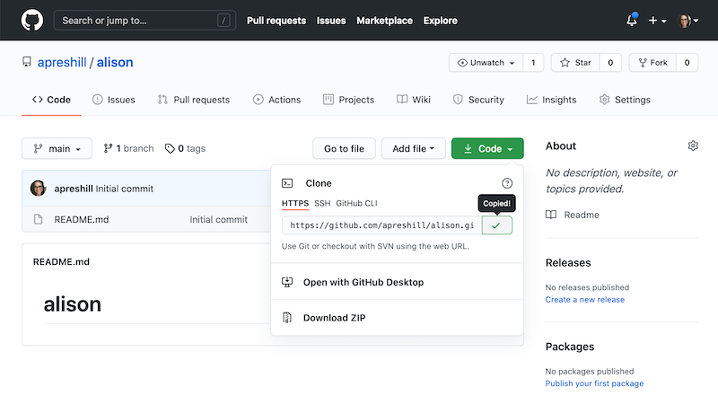
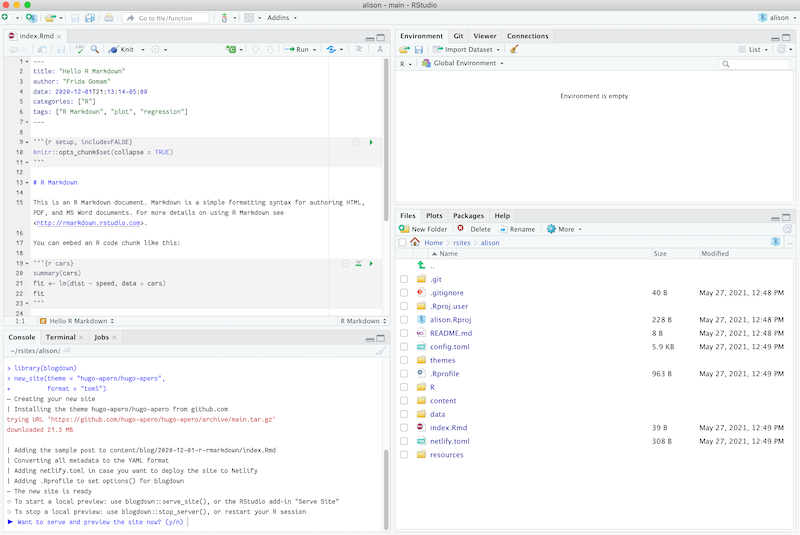
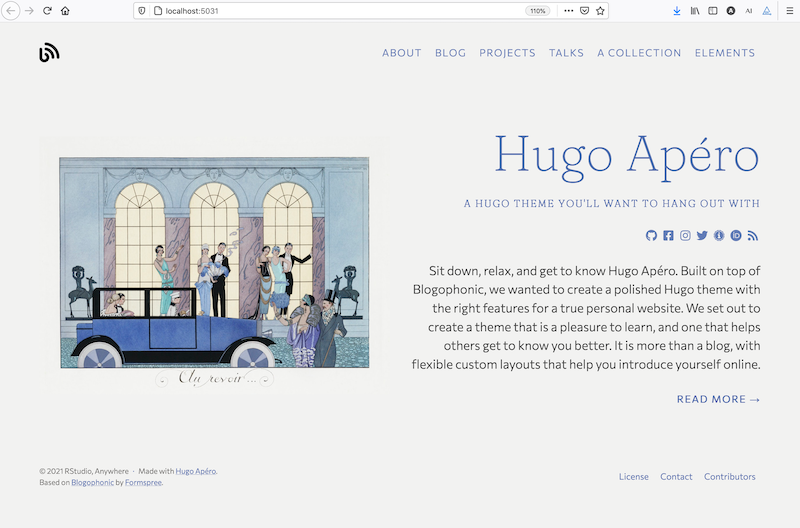

Get started > 02: Create your site
02: Create your site
By Alison Hill
May 26, 2021
New site, GitHub first
This is my recommended workflow for most users.
Create repo
Create a new repository on GitHub from https://github.com/new:
-
Check to initialize with a
README -
Don’t add
.gitignore- this will be taken care of later.

From the main page of your new repository, and under the repository name:
-
Click the green Code button.
-
Choose either HTTPS or SSH (if you don’t know which, choose HTTPS). Choose by clicking on the clipboard icon to copy the remote URL for your new repository. You’ll paste this text into RStudio in the next section.

Create project
We just created the remote repository on GitHub. To make a local copy on our computer that we can actually work in, we’ll clone that repository into a new RStudio project. This will allow us to sync between the two locations: your remote (the one you see on github.com) and your local desktop.
Open up RStudio to create a new project where your website’s files will live.
-
Click
File > New Project > Version Control > Git. -
Paste the copied URL from the previous step.
-
Be intentional about where you tell RStudio to create this new Project on your workstation.
-
Click Create Project.

Create site
Use blogdown to create the Hugo Apéro example website:
> library(blogdown)
> new_site(theme = "hugo-apero/hugo-apero",
format = "toml",
sample = FALSE,
empty_dirs = TRUE)
Take a moment to read through the message that prints your console (shown right) - importantly, it tells you how to start and stop the server so you can preview your site.
― Creating your new site
| Installing the theme hugo-apero/hugo-apero from github.com
trying URL 'https://github.com/hugo-apero/hugo-apero/archive/main.tar.gz'
downloaded 21.3 MB
| Adding the sample post to content/blog/2020-12-01-r-rmarkdown/index.Rmd
| Converting all metadata to the YAML format
| Adding netlify.toml in case you want to deploy the site to Netlify
| Adding .Rprofile to set options() for blogdown
― The new site is ready
○ To start a local preview: use blogdown::serve_site(), or the RStudio add-in "Serve Site"
○ To stop a local preview: use blogdown::stop_server(), or restart your R session
► Want to serve and preview the site now? (y/n)

We are asked:
► Want to serve and preview the site now? (y/n)
Select y to let blogdown start a server for us.
Now, don’t trap your site in the RStudio Viewer pane. Let it out!
Click the icon to Show in new window (to the right of the 🧹 icon) to preview it in a normal browser window. When you do that, you’ll be re-directed to the site’s main homepage.

If you followed these steps successfully and are looking at a Hugo Apéro site in your local browser, you are all set to start configuring your site 🚀
New site, GitHub last
Use the RStudio New Project Wizard to create a new blogdown project:
File -> New Project -> New Directory -> Website using blogdown
Figure 1: Create a new website project in RStudio.
Fill out the fields as shown.
Click Create Project.
The project wizard then runs a function that creates a new site for you by doing the following steps:
- Creates and opens a new RStudio Project for the website;
- Downloads and installs the Hugo Apéro theme (https://github.com/hugo-apero/) with an example site;
- Adds a sample
.Rmdpost; - Creates a
netlify.tomlfile to help you deploy your site to Netlify, and - Creates an
.Rprofilefile to set your blogdown options (some have been set up for you).

Figure 2: Create a website project based on blogdown.
To preview the site locally, run blogdown::serve_site() from the console or equivalently, click on the RStudio addin “Serve Site” (see Figure 3).

Figure 3: Use the blogdown addin to serve the site.
If you are not using RStudio, you can create a new empty directory, and call the new_site() function in the directory in the R console to create a new site project:
blogdown::new_site(theme = "hugo-apero/hugo-apero",
format = "toml")
This will generate the theme’s example site. To preview it locally, run:
blogdown::serve_site()
Then you can edit or discard the pages under content, and change things in the site configuration (config.toml) file.
To use Git/GitHub now with this existing site that you can serve locally, the easiest way is to use the usethis package:
# install.packages("usethis")
usethis::use_git()
usethis::use_github() # requires a GitHub PAT
If this doesn’t work for you, revisit our section on how to set up GitHub.
Update theme
To update your theme, inside your website project, use:
blogdown::install_theme(theme = "hugo-apero/hugo-apero",
update_config = FALSE,
force = TRUE)
Existing site
To convert an existing Hugo site from another theme, there are quite a few steps, and it may not be a smooth process. I recommend doing this in a branch on GitHub.
First, to install this theme alongside one you’d like to convert from, use the same code as above for updating the theme files:
blogdown::install_theme(theme = "hugo-apero/hugo-apero",
update_config = FALSE,
force = TRUE)
Next, use blogdown::hugo_version() to check your local Hugo version:
> blogdown::hugo_version()
[1] ‘0.80.0’
Make sure you have at least version 0.80.0 installed. If not, try blogdown::install_hugo(). To pin this Hugo version to your website project, use:
> blogdown::config_Rprofile()
And add this line (make sure there is an empty line at the end of this file, and restart your R session to make these changes go into effect):
options(blogdown.hugo.version = "0.80.0")
Now, the next steps are trial-and-error, depending on your theme. Here is one user’s steps followed to convert from the Academic/Wowchemy theme, with corresponding commits in their repo:
-
Install theme alongside Academic commit
-
Change
themetohugo-aperoinconfig.tomlcommit -
Copy all Academic shortcodes to
layouts/in root commit -
Remove all assets in website root commit
-
Remove all custom layouts in website root commit
-
Copy over Apéro example site
config.tomlfile commit -
Remove Academic
config/directory commit